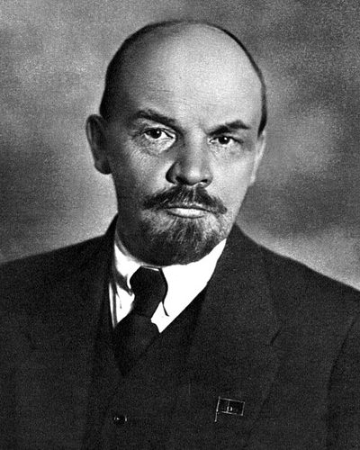

Ideologies / Radical Left
What is Marxism Leninism?
Marxism Leninism is a political ideology in the Radical Left family. It holds that the working class must seize the state through a disciplined vanguard party and use it to abolish private ownership of the means of production. The economy is then centrally planned. The state is expected to wither away only after class divisions have disappeared.
A vanguard party leads the workers to state power.
Defined from: V. I. Lenin, What Is to Be Done? (1902) and The State and Revolution (1918)
See how close you are to Marxism Leninism Dare a friend to answer as one

.jpg){kind=link}
Where Marxism Leninism stands on 13 axes
Each axis runs from 0 to 100. A score of 50 is the middle. On a classic compass it sits in the Authoritarian Left quadrant.
| Axis | Position | Score | In words |
|---|---|---|---|
| EconomyMarket to Planned | 100 | Very strongly Planned | |
| OwnershipPrivate to Collective | 100 | Very strongly Collective | |
| RightsLiberty to Security | 90 | Very strongly Security | |
| GovernmentDemocracy to Autocracy | 85 | Very strongly Autocracy | |
| StructureDecentralised to Centralised | 95 | Very strongly Centralised | |
| NationInternationalist to Nationalist | 30 | Strongly Internationalist | |
| ImmigrationMulticulturalist to Assimilationist | 45 | Balanced | |
| ValuesProgressive to Traditional | 30 | Strongly Progressive | |
| TechnologyAccelerationist to Precautionary | 15 | Very strongly Accelerationist | |
| EnvironmentIndustrialist to Environmentalist | 15 | Very strongly Industrialist | |
| ReligionSecular to Religious | 0 | Very strongly Secular | |
| MilitaryPacifist to Militarist | 75 | Strongly Militarist | |
| TradeFree Trade to Protectionist | 85 | Very strongly Protectionist |
Ideologies closest to Marxism Leninism
- Hoxhaism87% alike
- Guevarism85% alike
- Castroism84% alike
- Nkrumaism82% alike
- Trotskyism82% alike
Its opposite on this map is Gandhism, at 19%.
Parties near Marxism Leninism
Bolsheviks (Russia) was the first party or movement to carry it, placed here from Programme of the Russian Communist Party (1919).
- BolsheviksRussia. Programme of the Russian Communist Party (1919)90% alike
- Communist Party of the Soviet UnionSoviet Union. Programme of the Communist Party of the Soviet Union (1961)89% alike
- Communist Party of ItalyItaly. Programme of the Communist Party of Italy (1921)82% alike
- Technocracy IncorporatedUnited States. Technocracy Study Course (1934)79% alike
Common questions
What is Marxism Leninism?
Marxism Leninism is a political ideology in the Radical Left family. It holds that the working class must seize the state through a disciplined vanguard party and use it to abolish private ownership of the means of production. The economy is then centrally planned. The state is expected to wither away only after class divisions have disappeared.
What does Marxism Leninism believe?
In one line: A vanguard party leads the workers to state power. Its strongest positions are Planned, Collective, Secular. It holds that the working class must seize the state through a disciplined vanguard party and use it to abolish private ownership of the means of production. The economy is then centrally planned. The state is expected to wither away only after class divisions have disappeared.
Who founded Marxism Leninism?
Marxism Leninism is defined here from What Is to Be Done? (1902) and The State and Revolution (1918) by V. I. Lenin. The thinker most tied to it is Vladimir Lenin (1870 to 1924).
Is Marxism Leninism left wing or right wing?
On a classic two axis compass Marxism Leninism falls in the Authoritarian Left quadrant, which means the economic left and the authoritarian side. Left and right hide a lot, though, which is why EthosScales scores it on thirteen separate axes.
How is Marxism Leninism different from Hoxhaism?
They are close: 87% alike. The biggest gaps are on Values, where Marxism Leninism scores 30 and Hoxhaism scores 50, and Nation, where Marxism Leninism scores 30 and Hoxhaism scores 45. On each axis, 0 is one end and 100 is the other.
Think this is wrong? Suggest a correction. The scores are editorial estimates.